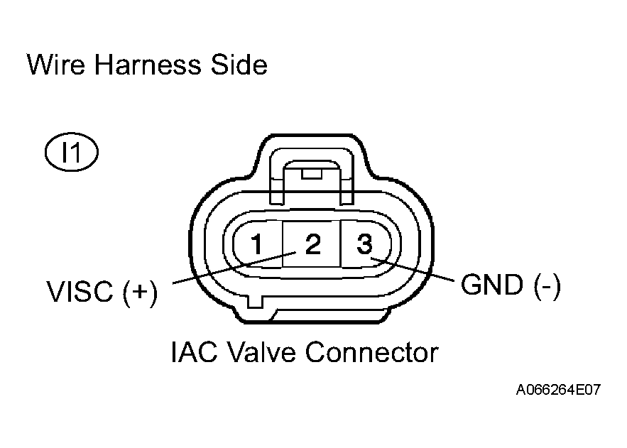
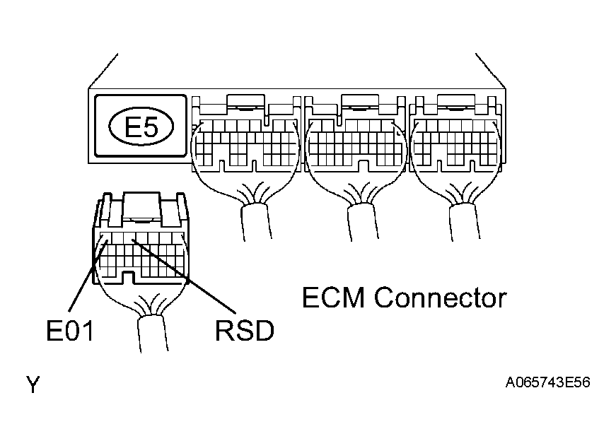

Inspection Procedure
HINT:
- When the throttle position is slightly opened (the accelerator pedal is slightly depressed) because a floor carpet is overlapped on the accelerator pedal, or if not fully releasing the accelerator pedal, etc., DTC P505 will possibly be detected.
- Read freeze frame data using the intelligent tester. Freeze frame data records the engine condition when malfunctions are detected. When troubleshooting, freeze frame data can help determine if the vehicle was moving or stationary, if the engine was warmed up or not, if the air-fuel ratio was lean or rich, and other data from the time the malfunction occurred.
- CHECK ANY OTHER DTCS OUTPUT (IN ADDITION TO DTC P0505)
- Connect the intelligent tester to the DLC3.
- Turn the ignition switch ON and turn the tester ON.
- Enter the following menus: DIAGNOSIS / ENHANCED OBD II / DTC INFO / CURRENT CODES.
- Read DTCs (see DTC CHECK / CLEAR
).
Result
RESULTDisplay (DTC Output) Proceed to P0505 A P0511 B
B: Go to step 7
A: Go to next step
- CHECK VENTILATION HOSE CONNECTIONS
OK: Ventilation hose is connected correctly and is not damaged.
NG: REPAIR OR REPLACE VENTILATION HOSE
OK: Go to Next Step
- CHECK AIR INDUCTION SYSTEM
- Check the air induction system for vacuum leakage.
OK: No leakage from air induction system.
NG: REPAIR OR REPLACE AIR INDUCTION SYSTEM
OK: Go to Next Step
- Check the air induction system for vacuum leakage.
- PERFORM ACTIVE TEST BY INTELLIGENT TESTER (CHECK IAC VALVE OPERATION)
- Connect the intelligent tester to the DLC3.
- Turn the ignition switch ON and turn the tester ON.
- Start the engine and warm it up to the normal operating temperature.
- Switch off all the accessories (if on).
- Switch off A/C (if on).
- Move the gear selector lever to the N position.
- Enter the following menus: DIAGNOSIS / ENHANCED OBD II / ACTIVE TEST / IAC STEP POS.
- Check that the engine speed varies when the Idle Air Control (IAC) step position is changed using the tester.
OK: Engine speed fluctuates according to IAC step position variation.
OK: CHECK FOR INTERMITTENT PROBLEMS
NG: Go to Next Step
- CHECK A/C SIGNAL CIRCUIT
- Check the A/C signal circuit (see TERMINALS OF ECU ).
NG: REPAIR OR REPLACE MALFUNCTIONING PARTS, COMPONENT AND AREA
OK: Go to Next Step
- CHECK FOR BLOCKAGE IN IAC VALVE AND PASSAGE TO BYPASS THROTTLE VALVE
NG: REPLACE IDLE AIR CONTROL VALVE
OK: Go to Next Step
- CHECK HARNESS AND CONNECTOR (BATTERY - IAC VALVE, IAC VALVE - BODY GROUND)
- Disconnect the I1 IAC valve connector.
- Turn the ignition switch ON.
- Measure the voltage between the terminals of the IAC valve wire harness side connector.
Standard voltage
TESTER CONNECTION - SPECIFIED CONDITIONSTester Connection Specified Condition VISC (I1-2) - GND (I1-3) 9 to 14 V
NG: REPAIR OR REPLACE HARNESS OR CONNECTOR

Courtesy of © TOYOTA, LICENSE AGREEMENT TMS1002OK: Go to Next Step
- CHECK HARNESS AND CONNECTOR (IAC VALVE - ECM)
- Disconnect the I1 IAC valve connector.
- Disconnect the E5 ECM connector.
- Measure the resistance of the wire harness side connectors.
Standard resistance (Check for open)
TESTER CONNECTION - SPECIFIED CONDITIONSTester Connection Specified Condition DUTY (I1-1) - RSD (E5-5) Below 1 Ω GND (I1-3) - E01 (E5-7) Below 1 Ω Standard resistance (Check for short)
TESTER CONNECTION - SPECIFIED CONDITIONSTester Connection Specified Condition DUTY (I1-1) or RSD (E5-5) - Body ground 10 kΩ or higher
NG: REPAIR OR REPLACE HARNESS OR CONNECTOR

Courtesy of © TOYOTA, LICENSE AGREEMENT TMS1002OK: Go to Next Step
- INSPECT IDLE AIR CONTROL VALVE
- Inspect the IAC valve (see INSPECTION ).
NG: REPLACE IDLE AIR CONTROL VALVE
OK: REPLACE ECM